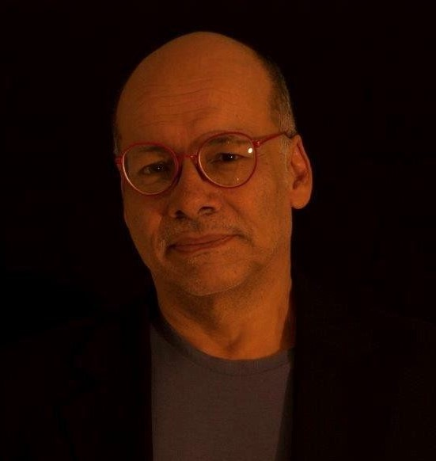

La ciudad de Panamá, convertida en Área Metropolitana (AMP) desde los años 1990, es una de las ciudades más dispersas del continente latinoamericano y ha llegado a superar 80 Kms de largo entre sus extremos este y oeste (Pacora-La Chorrera), dimensión que no se encuentra ni siquiera en ciudades como San Paulo, México o Buenos Aires, diez veces más pobladas que la nuestra.
Con apenas dos millones de habitantes y graves problemas de congestión en las calles y los servicios públicos, el AMP enfrenta la necesidad de revisar su modelo de crecimiento desperdigado para orientarlo hacia algo que pueda denominarse desarrollo urbano y deje de ser simplemente expansión.
Expositor: 
Alvaro Uribe
Arquitecto de la Universidad de Panamá, tiene maestría en Ordenamiento Territorial en la Universidad de París y posgrado en Sistemas de Información Geográfica en el Instituto de Estudios de Vivienda y Desarrollo Urbano de Rotterdam.
Ha participado en los planes General y Regional para el área del Canal y en el plan Metropolitano para las ciudades de Panamá y Colón. Realiza en la actualidad el primer plan de ordenamiento Territorial para el municipio de Panamá.
Es profesor de la Universidad de Panamá e investigador asociado del Centro de Estudios Latinoamericanos (CELA), del Centro Internacional para el Desarrollo Sostenible (CIDES) en la Ciudad del Saber, ambos en Panamá y del Instituto Lincoln de Políticas de Suelo de Cambridge, EUA. Es asesor de planificación urbana del Metro de Panamá desde su inicio en 2010.
Autor del ensayo “Ciudad fragmentada”, sobre la estructura urbana de Panamá.